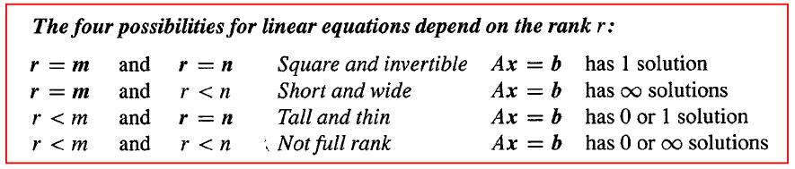

- 直观：「秩」是图像经过矩阵变换之后的空间维度
- 定义：「秩」是列空间的维度
- 物理意义：From an applied setting, rank of a matrix denotes the information content of the matrix. The lower the rank, the lower is the "information content".
我的理解：
given a point (vector)x in \(\mathbb {R}^n\), apply the transformation, map it into another point b. As column of C is the combination of columns of A, this indicates point b is within the columns space of A. In other words, point b is a point inside the vector space defined by A's columns.
Rank by definition from wiki:
in linear algebra, the rank of a matrix A is the dimension of the vector space generated (or spanned) by its columns.
Additional if some columns inside A doesn't provide more information(constraint) to the space. They don't define new dimentions. They are just the combinations (scalar multiply and vector add) of other 'essential' columns. The number of the 'essential' columns which defines the vector space is rank.

b is any point in \(\mathbb {R}^m\). A defines a space with its column vectors. Of course, if you want this system of equation has a solution, b must be in the space defined by A. In another way, a given point x will be transformed into a point in space defined by A. You might also want this process to be reversible, so that you can recover x given b and system matrix A.
- A defines the vector space \(\mathbb {R}^n\), any point x in \(\mathbb {R}^n\) has a unique mapping point b which is in \(\mathbb {R}^n\).
- A defines the vector space \(\mathbb {R}^m\), a subspace in \(\mathbb {R}^n\), multiple points in $\mathbb {R}^n will map to the same point in space constrained by A.
- A defines a subspace in \(\mathbb {R}^m\), point b in this subspace has a unique mapping x which is in \(\mathbb {R}^n\). Point b which is not this subspace, however in \(\mathbb{R}^m\), could not find any mapping points x.
- A defines a subspace in \(\mathbb {R}^m\), point b in this subspace has more than one mapping x which is in \(\mathbb {R}^n\). Points b which is not this subspace, however in \(\mathbb{R}^m\), could not find any mapping points x.